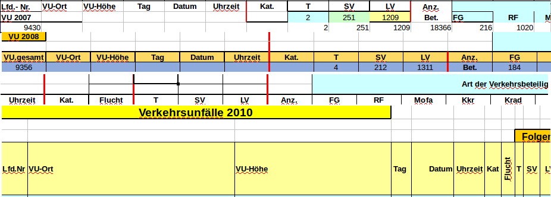

Verkehrsunfälle in Münster
2007 bis 2014
Worum gehts?
Der Datensatz
──────
Die Bearbeitung
──────
Ein Ausblick
Problem 1: Unterschiedlich benannte Spalten pro Jahr

Ab 2010 gleiche Spalten, 2015/2016 zusätzliche Spalten
Problem 2: Orte nur wörtlich beschrieben.
Beispiele:
Königsberger Straße ggü 104
Orleans-Ring/Orléans Ring
Rüschhausweg k.h.Hülshoffstraße ausw.
Straße/Strasse/Str
und so weiter...
Schritt 0: Excel Tabellen als CSV exportieren
mit Libre Office.
auf Umlaute achten.
Erleichtert Import in Datenbank.
Schritt 1: Spalten anpassen
Gleiche Spalten mit unterschiedlichem Namen identifizieren.
Schreibweisen normalisieren.
Schritt 2: Zeitstempel parsen
Erledigt durch Datenbankimport.
Zusammenführen der Spalten `Datum` und `Uhrzeit`.
Zeitstempel nach UTC umrechnen.
Schritt 3: Orte geocodieren
Zuweisen von geographischen Koordinaten anhand z.B.: einer Adresse.
Daten kamen aus OpenStreetMap.
Verwendete Software: OverpassAPI, Postgis, eigene Implementierung drum herum.
Allein das geocodieren hat etwa 48 Stunden gebraucht.